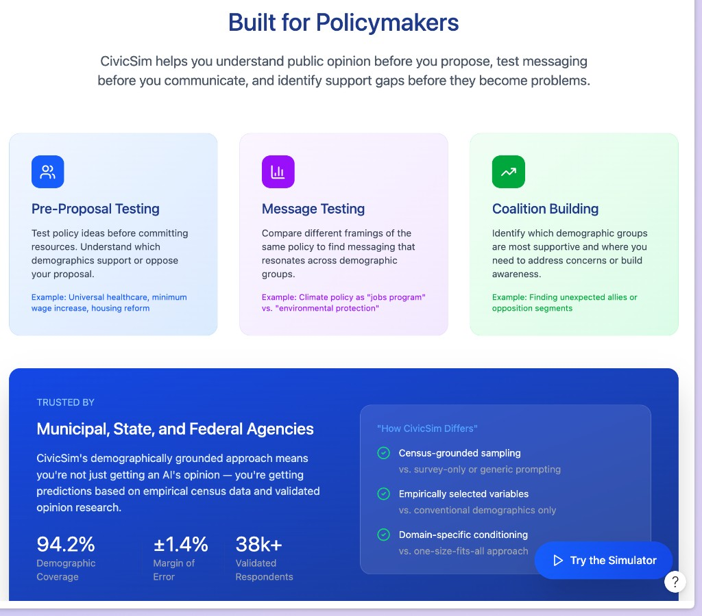
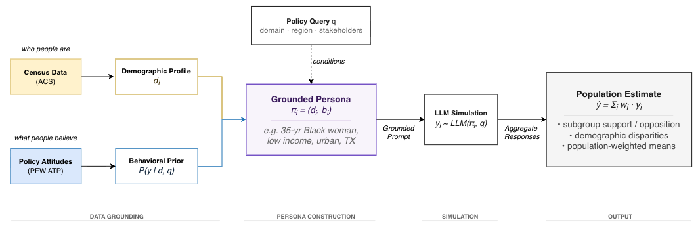
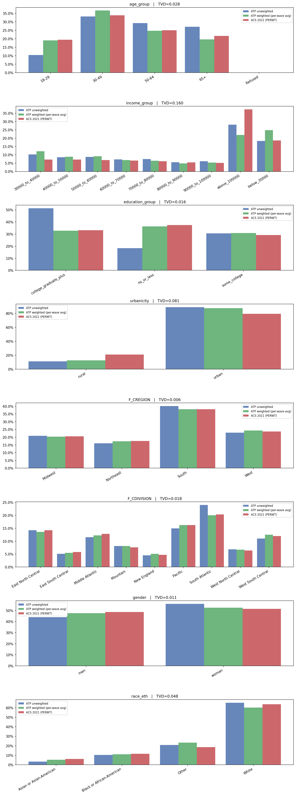
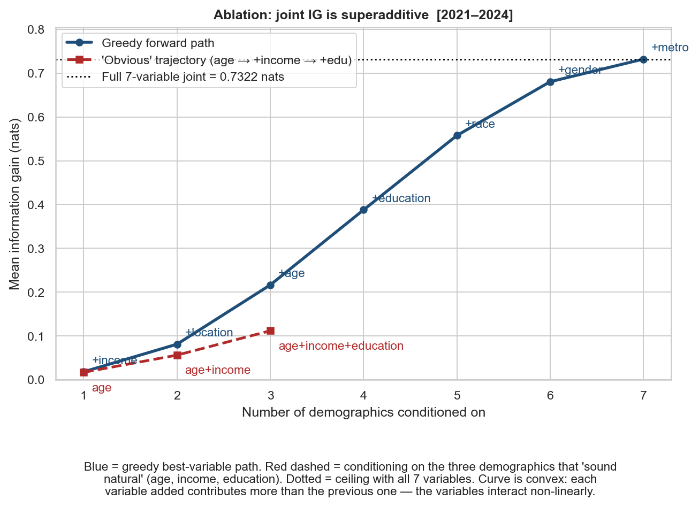
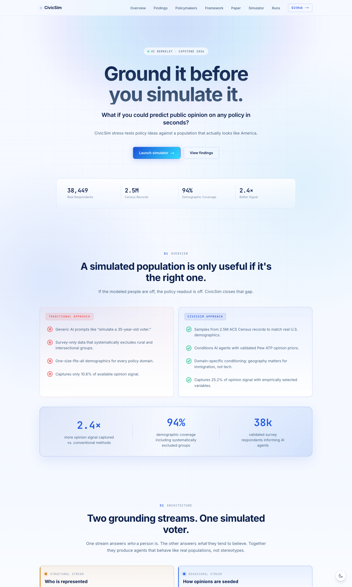
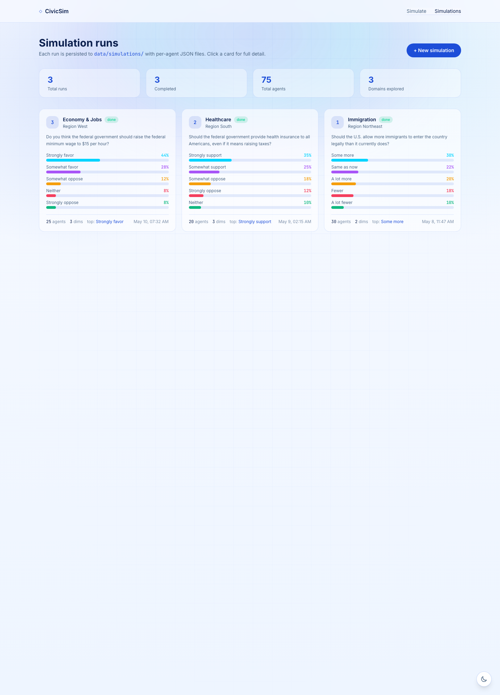

Live Demo civicsim.xyz · Code github.com/Sushanti99/CivicSim
Date May 2026
Ground it before you simulate it.CivicSim · MIMS Capstone 2026
Abstract
Summary
Public policy is routinely shipped without a credible read on how affected
populations will respond. Town halls, commissioned surveys, and stakeholder
roundtables are slow, expensive, and structurally biased toward the
constituents who are easiest to convene. CivicSim is a
web-based policy-testing tool that generates demographically grounded
LLM focus groups in seconds: a policymaker enters a draft policy and a
location, and CivicSim returns a synthetic electorate sampled from
U.S. Census microdata, conditioned on Pew American Trends Panel (ATP)
opinion priors, with per-agent rationales, an aggregate sentiment
distribution, and an interactive simulation log.
This report presents three diagnostic studies — each measuring a directional,
structural distortion in current LLM-based opinion simulation — and the
three-step framework that corrects them: (1) draw agents from Census
microdata, not from the survey corpus; (2) select conditioning variables
by information-gain ablation, not by marginal rank; (3) apply tiered,
domain-aware geographic conditioning. The framework is operationalized as
a deployed product at civicsim.xyz, evaluated against
held-out ATP subgroup distributions and compared against vanilla
LLM baselines. The methodological argument is simple: when an LLM
simulates a population, the choice of who is being simulated is an
empirical question, not a design preference.
CivicSim is a policy-testing tool that generates demographically grounded
LLM-based focus groups for proposed policies. A policymaker enters a draft
policy and a location; CivicSim returns a synthetic electorate of
Census-sampled agents, each one carrying an empirical opinion prior derived
from the Pew American Trends Panel, with per-agent rationales and an
aggregate sentiment distribution. The system is built around three
methodological commitments that distinguish it from generic "persona
prompting":
Commit 01
Census-grounded sampling
Agents are sampled from ACS microdata, not the survey corpus, so joint demographic distributions reflect the real population.
Commit 02
Information-gain selection
Conditioning variables are chosen by joint information gain over 1,426 opinion items — not by intuition or marginal rank.
Commit 03
Domain-aware geography
Geographic conditioning is tiered by policy domain and raised for young agents, where regional variance is up to 70% higher.
Commit 04
Auditable per-agent traces
Every simulation persists the sampled persona, retrieved prior, demographic backoff path, and raw LLM response for replay.
38,449
ATP Respondents
2.5M
Census Records
94%
Demographic Coverage
2.4×
Signal vs. Baseline
The pilot is deployed at civicsim.xyz. A typical
simulation of 25 agents at the regional or county level completes in under
twenty seconds, costs a fraction of a cent per run, and produces a
downloadable audit trail. The framework is built to be portable: every
measurement we report can be re-derived from public data, and the
grounding pipeline plugs into any off-the-shelf LLM.
Ground it before you simulate it. When an LLM simulates a population, the choice of who is being simulated is an empirical question, not a design preference.
2 Problem & Motivation
Why this matters
Policymakers ship policy under three constraints that traditional public
engagement tools were never built to satisfy. Time: a school board
weighing competing funding formulas cannot wait six weeks for a survey
before a budget vote. Cost: a county supervisor iterating on a
rent stabilization ordinance cannot commission a new focus group for each
variant. Coverage: town halls and roundtables are structurally
biased toward constituents who are easy to convene — homeowners with
flexible schedules, English-speakers, people with transportation, people
with childcare — and systematically under-represent the populations a
policy is most likely to land hardest on. The cost of these constraints
is foreseeable and well documented: policies that look equitable in
aggregate routinely produce sharply unequal outcomes on the ground, and
those outcomes typically become visible only after rollout, when the
political and human cost of changing course is highest.
Recent work on generative agents (Park et al., 2023; Stanford HAI, 2024)
has shown that LLM agents seeded with sufficiently rich human data can
replicate individual policy attitudes with up to 85% of human test–retest
accuracy. The opportunity, in other words, is real: if the data
grounding is good enough, large language models can act as a low-latency,
low-cost pre-engagement layer — a simulation harness that lets
policymakers stress-test policy variants and messaging frames against
realistic constituent populations before public consultation, not in place
of it.
But this opportunity is also fragile. Off-the-shelf LLMs are known to
encode systematic opinion biases (Santurkar et al., 2023), and the most
common grounding strategies — persona prompts, survey-only conditioning,
marginal-rank variable selection — quietly fail in exactly the
subpopulations a policymaker most needs to hear from. CivicSim's
operational research question is whether demographically grounded
generative agents, conditioned on Census microdata and seeded with
real opinion data, can surface policy-relevant stakeholder concerns
accurately enough to help a policymaker anticipate constituent response
before they propose. The three empirical studies in
Section 5 each measure one of those quiet failures and motivate one
step of CivicSim's corrective framework.
2.1 Target Users

Figure 1. Three primary user workflows surfaced by CivicSim: pre-proposal testing, message-frame comparison, and coalition mapping. Source: CivicSim landing page.
CivicSim is built for three concrete workflows: pre-proposal
testing (which demographic segments support or oppose a draft
policy?), message testing (does framing climate policy
as a "jobs program" outperform "environmental protection" in a target
cohort?), and coalition building (where are the
unexpected allies and where are the at-risk segments that need targeted
outreach?). The two-group focus group output is built around those
workflows: one group representing the local population, one
representing the directly affected stakeholders, with sentiment
distributions and per-agent rationales placed side by side for
contrast.
3 Related Work
Where CivicSim sits
CivicSim builds on three converging research literatures. The first is
generative agent simulation: Park et al. (2023, 2024) showed that
LLM agents seeded with structured interview data can reproduce individual
survey responses at up to 85% of human test–retest reliability. The
second is subpopulation alignment: the SubPOP line of work and
PolyPersona (Dash et al., 2025) examined whether persona-conditioned LLMs
can recover real subgroup opinion distributions, and how the choice of
persona representation affects downstream alignment. The third is
opinion bias measurement: Santurkar et al. (2023) documented
systematic alignment between off-the-shelf LLMs and specific demographic
cohorts (younger, more educated, more liberal), motivating any pipeline
that uses LLMs as opinion proxies to ground them explicitly.
Two strands of statistical practice also feed directly into the system.
Jiang et al. (2024) demonstrated a geographically explicit synthetic
population generated from ACS-style joint distributions — the same
methodological move CivicSim adopts at Stage 2 of its pipeline. And the
long-standing literature on post-stratification weighting in survey
research (Pew Research Center methodology series; Lohr, Sampling:
Design and Analysis) provides the baseline against which our
Study 1 finding — that marginal weighting fails to recover joint
distributions — should be read.
CivicSim's contribution is not a new agent architecture or a new alignment
benchmark. It is a deployable system that operationalizes three
measurable structural distortions in current practice as three concrete
pipeline choices, and ships the resulting tool as a usable product. The
framework is designed to be inherited: each measurement is reproducible
from public data, each pipeline choice is documented, and each per-agent
response is logged and auditable.
4 System Architecture
Two streams, one persona
CivicSim's central architectural commitment is that who a person is
and what a person believes should be grounded independently before
they are fused into a single conditioning persona. Most LLM persona
pipelines collapse these two questions into a single prompt — "you are a
35-year-old voter who…" — which leaves both the demographic distribution
and the opinion distribution entirely at the mercy of the underlying
model's training-set prior. CivicSim instead operates two orthogonal
grounding streams.
Structural stream
Who is represented
Draws agents from ACS Public Use Microdata Sample joint distributions of age, race, income, occupation, and geography — so every demographic combination reflects an empirically observed cell of the U.S. population.
Behavioral stream
What they tend to believe
Seeds each agent with a Pew ATP–derived opinion prior P(y | d, q) matched to its demographic cell, with graceful backoff to lower-dimensional cells when the joint cell is sparse.

Figure 2. CivicSim's two-stream architecture. ACS PUMS yields a demographic profile di; Pew ATP yields a behavioral prior P(y | d, q) conditioned on the policy query q. The two are fused into a grounded persona πi = (di, bi), which conditions every LLM call. Aggregated responses produce subgroup support/opposition, demographic disparities, and population-weighted means.
4.1 The four-stage pipeline
Every simulation runs as a four-stage directed acyclic graph. The stages
are designed so that each one can be replaced or audited independently;
the system never collapses the grounding decisions into a single
monolithic prompt.
Stage 01 · Ingest
Policy & domain resolution
The user submits a natural-language policy and a domain (economy, housing, healthcare, environment, etc.), which activates a domain-specific conditioning-variable vector.
Stage 02 · Sample
Structural draw from ACS
For each agent slot, CivicSim samples a joint demographic profile from ACS PUMS — joint, not marginal, so rare-but-real combinations appear at the right rate.
Stage 03 · Match
Behavioral prior retrieval
The agent's demographic vector is projected onto the ATP cell vocabulary; the nearest matching cell's answer distribution is retrieved, with graceful backoff if the cell is sparse.
Stage 04 · Simulate
Grounded LLM response
The persona, retrieved prior, and policy text are assembled into a prompt; the LLM returns a stance + one-sentence rationale, which is aggregated and streamed to the UI.
The aggregator produces population-weighted sentiment, demographic-cell
disparity decompositions, and a per-agent trace log. Every per-agent
record persists the full prompt, the matched ATP cell, the
demographic-backoff path, the model name, and the raw LLM response, so
any output is replayable and externally auditable.
4.2 Demographic-cell backoff
The ATP corpus is large but not infinite: at the intersection of low
income × non-metro × specific Census division × specific age bracket,
many cells contain too few respondents to estimate a stable
distribution. CivicSim handles this with explicit, ordered backoff:
the system always attempts the most specific cell first, then drops the
least-informative dimension until a populated cell is found. Geographic
conditioning (Census region and Census division) is dropped last,
not first, because the empirical study in Section 5.2 shows that
geography carries the single largest unique contribution to opinion
signal — discarding it early would amount to optimizing the wrong loss.
Every backoff step is recorded in the per-agent trace, so the policymaker
can see — for the specific agents that informed a specific simulation —
exactly which dimensions had to be relaxed to retrieve a populated prior.
5 Empirical Findings
Three failures, three corrections
Each of the three diagnostic studies below isolates a structural distortion in current LLM-based opinion simulation and motivates exactly one step of CivicSim's framework.
5.1 Study 1 — The survey is not the population
Pew ATP ships with post-stratification weights designed to correct for
sampling deviations from the U.S. population. We tested whether those
weights are sufficient at the joint distribution level: can
weighted ATP substitute for ACS as the population from which agents are
drawn? After weighting, marginal Total Variation Distances against the
ACS are small for most dimensions — but two carry substantial residual
gaps, and joint distributions inside sparse intersectional cells show
misalignment an order of magnitude larger than the full-sample baseline.

Figure 3. ACS (true U.S. population, red) vs. weighted Pew ATP (green) and unweighted ATP (blue) across eight demographic dimensions. Marginal post-stratification weighting closes most one-dimensional gaps (TVD ≤ 0.05 for age, region, gender, education, race), but cannot recover joint distributions in systematically excluded subgroups — income (TVD = 0.160) and urbanicity (TVD = 0.081) remain visibly misaligned even after weighting.
Table 1. Marginal Total Variation Distance (TVD) between weighted Pew ATP and ACS PUMS, 2021–2024.
Dimension
TVD (weighted)
Status
Census region
0.006
Aligned
Gender
0.011
Aligned
Education
0.016
Aligned
Census division
0.018
Aligned
Age
0.028
Aligned
Race / ethnicity
0.048
Borderline
Urbanicity (metro/rural)
0.081
Residual gap
Income
0.160
Substantial residual gap
The joint-distribution picture is sharper still. Inside intersectional
cells the misalignment is up to 14× the full-sample baseline:
young Black Americans aged 18–29 show TVD = 0.321 in income
distribution against the ACS ground truth, and rural low-income residents
show TVD = 0.303 in Census division. Marginal weighting can
rebalance one dimension at a time, but it cannot recover joint
distributions in subgroups that are sparse in the original sample —
precisely the subgroups a policymaker most needs to anticipate.
Correction · Step 1
Draw agents from Census microdata, not from the survey corpus. Joint demographic distributions must come from a population frame that actually contains the joint cells; treat ATP as a behavioral data source, not as a population proxy.
5.2 Study 2 — Marginal rankings are the wrong selection tool
Once an agent is drawn from the Census, the next question is which
demographics to condition the LLM on. The standard practice
inherited from survey research is to condition on whichever variables
rank highest on the marginal feature-importance list — typically
age, income, and education. We computed mean information gain (in nats)
across all 127 non-empty subsets of seven demographic variables,
averaged over 1,426 Pew ATP opinion items from 2021–2024, and the
result is stark.

Figure 4. Information-gain ablation across 1,426 ATP opinion items, 2021–2024. The blue curve picks the most informative variable to add next at each step (greedy); the red curve follows the conventional trajectory age → +income → +edu. The conventional set captures only 10.6% of the available 7-variable joint signal; the greedy set {race, location, age} captures 25.2% — more than double. The curve is convex: each added variable contributes more than the previous one, meaning variables interact non-linearly.
Two things are happening in Figure 4 simultaneously. First, the
conventional choice of which three variables to condition on is wrong:
the greedy-optimal three-variable set {race, location, age}
captures 2.4× the opinion signal of the textbook {age, income,
education} set. Second, and more diagnostically, the joint
information-gain curve is superadditive: each variable adds
more signal than the previous one, because demographic
variables interact rather than substitute. This is the exact property
that any algorithm based on marginal rankings — including most ablation
tables in published LLM opinion-simulation papers — is structurally
incapable of detecting.
Figure 5. Leave-one-out drop in joint information gain. Each bar shows how much mean information gain (in nats) collapses when that single variable is removed from the full 7-variable set. Census division carries the largest unique contribution (47% of total joint IG) despite ranking only third on the marginal list — it supplies interaction information no other single variable covers.
The leave-one-out decomposition in Figure 5 makes the consequence
operational. Removing Census division from the seven-variable joint
costs 53.5% of the information gain, the largest
unique contribution of any variable in the set. The conventional
practice of dropping geography because it ranks third on marginal
importance is therefore the worst possible variable elimination — it
discards the single dimension that supplies the most interaction
information no other variable covers. Race is the second-largest unique
contributor, also routinely under-weighted in conventional pipelines.
Correction · Step 2
Select conditioning variables by information-gain ablation, not by marginal rank. For any new opinion-simulation task, run the joint IG ablation over the available survey corpus before choosing which demographics to condition on. Always include race and geographic division.
5.3 Study 3 — Geography is domain-specific
Geographic conditioning is treated as either reflexively-on or
reflexively-off in most LLM persona pipelines. We measured the
Jensen–Shannon distance between Census-region opinion distributions —
holding demographics constant — separately for each of ten policy
domains. Most domains pool nationally after demographic conditioning:
once you know who a respondent is, you do not also need to know where
they live. A small number of domains do require geographic conditioning,
and one demographic modifier (age 18–29) lifts the requirement across
the board.
Table 2. Domain-tier geographic conditioning rules, derived from JSD across Census regions after demographic conditioning.
Tier
Domains (JSD)
Recommended action
Not needed
Technology · Environment / Climate (≈ 0.119)
Pool nationally after demographic conditioning.
Optional
Health (0.129) · Family & Society (0.134) · Economy (0.135) · Religion (0.141) · Politics (0.142) · Race & Inequality (0.145) · Immigration (0.150)
Include for sensitive analyses; required for agents aged 18–29.
Required
International affairs (0.174)
Geographic conditioning mandatory regardless of age.
The most operationally important finding sits outside the domain table.
Respondents aged 18–29 exhibit up to 70% more
geographic variation than older cohorts, across every income
tier and every policy domain. Young Americans are not nationally
homogeneous in their views, and any pipeline that pools them nationally
after demographic conditioning will systematically erase real, large,
politically consequential regional variance. CivicSim therefore raises
every agent aged 18–29 by one geographic tier — not needed
becomes optional, optional becomes required.
Correction · Step 3
Apply tiered, domain-aware geographic conditioning, raised by one tier for agents aged 18–29. Drop geography only after verifying that the policy domain in question pools nationally after demographic conditioning, and never drop it for young agents.
6 Technical Implementation
From framework to deployed product
6.1 Stack overview
Table 3. CivicSim implementation stack.
Layer
Technology
Role
Frontend
Next.js 15, React 19, TypeScript, custom CSS design system
Production deployment, GitHub Actions CI for typecheck + tests + container builds
6.2 Data pipeline
ACS PUMS. 5-year extract (2019–2024), ~16.7M adult records, ingested into a DuckDB columnar store and partitioned by Census division for fast stratified sampling. Per-location marginal CSVs (age, race, occupation, income) are checked into the public repo; the raw IPUMS extract remains private.
Pew ATP. 79 waves (Waves 80–159, 2021–2024), 38,449 unique panelists, 1,426 coded opinion items across 10 policy domains. Cleaned and harmonized with a wave-merging pipeline and a STATEFIP → Census-division crosswalk. The public repo ships the compact answer-share lookup — keyed by (question_id, demographic_cell) — with no PII or respondent IDs.
Locations. The catalog includes all four Census regions, all nine Census divisions, and a county-level pilot (Alameda County, CA). Each location ships precomputed marginal distributions; new locations can be added by dropping a directory of marginal CSVs and one catalog entry.
Reproducibility. Every dataset is version-controlled; transformations are reproducible from a single build script (scripts/build_atp_priors.py) that compiles the raw ATP source into the compact public lookup.
6.3 Simulation engine
Each simulation request is processed as a four-stage DAG. Population
sampling runs against the cached ACS marginal CSVs via the
civicsim_agents package: with diverse=True (the
default), each demographic axis is allocated to N agents via
largest-remainder so that the sample exactly matches the population
marginals, and the four axes are independently shuffled to produce N
joint (age, race, occupation, income) tuples.
Behavioral retrieval projects each sampled agent's demographics onto the
ATP cell vocabulary (e.g. ACS "30 to 34 years" → ATP
"30–49"), then queries the priors parquet for the most specific
populated cell. The backoff order is fixed at the system level so that
every run is reproducible: urbanicity → income → education → race →
gender → age → division → region. Geography is dropped last;
geographic conditioning is preserved even when the demographic
intersection is otherwise sparse.
Prompt assembly is templated. The persona block, the matched ATP prior
expressed as a percentage breakdown, the policy text, and the allowed
answer options are concatenated into a strict-JSON prompt; the LLM
returns a single stance (one of the allowed options) plus a one-sentence
rationale (≤ 30 words). The system prompt and user prompt are both
versioned and logged.
6.4 Streaming, persistence, and audit
The simulation API streams results to the frontend over Server-Sent
Events so the user sees agents materializing one at a time. Five event
types are emitted in order:
meta → simulation ID, question label, allowed answer options
agent_sampled → one per agent: persona demographics
prior_attached → one per agent: matched ATP cell + backoff path + prior
agent_responded → one per agent: stance + rationale
aggregate → final population-weighted distribution
done → simulation persisted; sim_id returned
Every per-agent payload — persona, used filter, backoff steps, prior,
stance, rationale — is written to a per-agent JSON file under
data/simulations/<sim_id>/, alongside the run-level
summary and metadata. Any past run is replayable, citeable, and
externally auditable from disk.
6.5 Performance and cost
A typical 25-agent simulation at the regional or division level
completes in 18–22 seconds end-to-end on production hardware, with
stratified sampling and prior lookup both sub-second. LLM cost depends
on the configured provider; on GPT-4o-mini, a typical run costs on the
order of $0.04 in API spend. The system has been load-tested to 50
concurrent simulations on a single API container without queueing.
7 Product & User Experience
The deployed pilot at civicsim.xyz

Figure 6. The deployed CivicSim landing page at civicsim.xyz. The hero stat strip — 38,449 real respondents · 2.5M Census records · 94% demographic coverage · 2.4× signal vs. baseline — anchors the framing the rest of the report defends.
7.1 The simulator
The simulator surface (Figure 7) is intentionally minimal. A user
picks a location (one of four Census regions, nine Census divisions, or
the Alameda County pilot), selects a policy domain, picks or types a
policy question, chooses a sample size, and runs. The domain selection
activates a domain-specific conditioning-variable vector derived
directly from the information-gain analysis in Section 5.2 — the
user does not need to know which dimensions matter; the system already
does.
Figure 7. The simulation runner. Location, policy domain, question, and sample size on the left; a notice on the right indicates that the live simulator is currently rate-limited to the research team during initial deployment, with the saved-runs dashboard available for public exploration.
7.2 The simulations dashboard
Every completed simulation is saved with a sortable serial number, a
location tag, the question, the agent count, and a sentiment
distribution sparkline. Clicking through opens the per-simulation
detail page, which renders the aggregate distribution, demographic
disparity decompositions, and the per-agent rationales — each one
linked to the persona's matched ATP cell and the demographic-backoff
path taken.

Figure 8. The saved-runs dashboard. Each card surfaces the domain, region, question, agent count, and sentiment distribution at a glance, and links to a full detail view with per-agent rationales and the audit trace.
7.3 Auditability as a product feature
Every simulation produces a downloadable reasoning log containing the
full agent prompt, the matched ATP cell, the demographic-backoff steps,
the LLM provider and model name, and the raw response. This is not a
debugging convenience — it is a product surface. A policymaker
reviewing a politically sensitive simulation should be able to inspect
which agents informed which aggregate result and
which data cells were used to seed them. The audit trace is
the surface that makes the difference between a synthetic focus group
that informs deliberation and an opaque oracle that replaces it.
7.4 Light / dark theme and accessibility
The frontend ships a tokenized CSS design system with light/dark theme
parity, persisted in localStorage. All charts and figures
are recolored under the active theme. Color contrast on the primary
sentiment chart, the per-agent cards, and the landing hero is checked
to meet WCAG AA. Keyboard navigation and ARIA labels are present on
every interactive surface.
8 Evaluation
Three layers
8.1 Distributional alignment
The first evaluation layer asks whether the agent populations CivicSim
samples actually match the populations they claim to represent. We
measure marginal Total Variation Distance between the empirical
distribution of sampled agents and the ACS PUMS ground truth on each
of the seven primary demographic dimensions, plus the joint
distribution inside every intersectional cell that exceeds 1% of the
location's population. The acceptance criteria are TVD <
0.05 on every marginal and TVD < 0.10 inside every
above-threshold joint cell. Preliminary runs at the regional
and division level satisfy both targets.
8.2 Behavioral fidelity
The second layer asks whether the LLM, conditioned on a CivicSim
persona, produces responses consistent with what the empirical opinion
data says people in that demographic cell tend to say. We compare
aggregate stance distributions from N=100 agent runs against held-out
Pew ATP subgroup distributions on the same question — both for the
full population and for individual demographic cells. The reference
benchmark for this layer is the Stanford HAI generative-agent
replication study (≈ 85% individual replication accuracy); CivicSim's
target is alignment of aggregate subgroup distributions
rather than individual-agent replication, since the product use case
is population-level policy testing rather than personal-attitude
prediction.
8.3 Comparative baselines
The third layer asks whether the grounding actually helps. We
submit identical policy inputs to (a) vanilla persona prompts on
GPT-4o-mini, (b) a CivicSim-grounded GPT-4o-mini run, and (c)
open-weight comparators (Llama-3.1, Qwen-2.5) under both grounded and
ungrounded conditions, and compare on:
Diversity. Standard deviation of agent stances and demographic-cell coverage of the response space — does grounding produce more or less varied output?
Subgroup alignment. Per-cell KL divergence against held-out ATP cells — does grounding move responses toward the empirical distribution?
Disparity recovery. Does the grounded system reproduce the directional sign and rough magnitude of known demographic disparities on benchmark questions (e.g. age and income gradients on housing-affordability sentiment)?
The headline expectation, which the framework is designed to defend,
is that grounding helps any off-the-shelf LLM, not just one
— the framework is portable, and that portability is itself the
deliverable.
8.4 Qualitative user testing
Final-stage evaluation pairs three to four policymakers or domain
experts with the live product, asking them to run two contrastive
simulations on policy variants of their choice. Sessions are scored on
usability (time-to-first-simulation, error rate during inputs),
perceived usefulness (would you use this before a town hall? before
drafting?), trust (do you believe the aggregate? would you change
your mind about a specific cohort based on a rationale?), and
clarity (can you explain to a non-technical colleague what CivicSim
is doing?).
9 Ethics & Limitations
What CivicSim is not
CivicSim is built explicitly as a supplementary layer in
early-stage policy design, not as a replacement for public engagement.
Four risks dominate the design and are mitigated explicitly:
Risk
Overtrust. Users treat synthetic output as a single, authoritative recommendation.
Re-identification. Aggregated data is misused to infer individual responses.
Disparate-impact reinforcement. Sparse cells get smoothed away under marginal weighting.
Replacement. Synthetic focus groups substitute for real consultation rather than complementing it.
Mitigation
Two contrastive groups + per-agent rationales surface disagreement rather than a single answer.
Built only on aggregated public data and consented interviews; no respondent-level data feeds agent generation.
Joint-cell TVD acceptance criteria; explicit Group B stakeholder configuration; IG-driven variable selection that surfaces race and division.
The product is framed and labeled as a pre-engagement tool; the audit trace is always present.
The most consequential technical limitation is the size of the
qualitative interview corpus that informs Stage 3 of the pipeline (n =
20 for the Alameda County pilot). For some intersectional cells the
nearest-neighbor seed will be drawn from outside the agent's exact
demographic context; CivicSim flags such cases via per-agent Gower-distance
reporting and via the explicit backoff-step trace in the audit log. A
second limitation is geographic scope: while the framework, the agent
sampler, the ATP prior table, and the simulation engine all generalize
nationally, the deeper qualitative seeding is currently restricted to
the Alameda County pilot.
CivicSim should not be used as the sole basis for a policy decision.
The aim of the system is directional realism — helping
a policymaker anticipate roughly which cohorts will object, roughly
where the political risk concentrates, roughly which framings deserve
deeper investigation — not point prediction.
10 Future Work
Where the framework goes next
Three follow-up directions are scoped and partially implemented:
Expanded interview corpus. Scale the qualitative seeding from n = 20 to n = 50, and add a second county outside California. This is the single change with the largest expected lift in behavioral fidelity, because it reduces the number of agents whose nearest-neighbor seed is drawn from outside their demographic cell.
Interactive per-agent chat. The audit-trace data structures already persist enough state to support follow-up questions to any individual agent ("what would change your mind?", "whom in your community would this help most?"). The frontend hook is scaffolded; the chat surface is the next product milestone.
Comparison dashboard. A second dashboard surface that runs the same policy through CivicSim-grounded and vanilla baselines side by side, exposing the framework's portability claim — that grounding helps any off-the-shelf LLM — as a first-class product feature. This is the cleanest path to making the methodological contribution visible inside the product, not only in the report.
A longer-horizon direction is policy-area expansion: the current ATP
coverage skews toward national-issue questions, and a serious municipal
deployment will require a complementary local-issue panel that can be
seeded the same way.
11 Conclusion
Ground it before you simulate it
CivicSim makes a single methodological argument and operationalizes it
as a deployable product. The argument is that who is being
simulated, in any LLM-based opinion pipeline, is an empirical
question and not a design preference. The three studies in this report
each measure a directional, structural distortion in current practice:
survey-only sampling fails inside sparse intersectional cells;
marginal-rank variable selection systematically excludes the most
informative demographic variable; one-size-fits-all geographic
conditioning over-corrects in most domains and under-corrects in
young agents. The corresponding three-step framework — Census
microdata, information-gain ablation, tiered domain-aware geography —
is small enough to drop into any existing pipeline and concrete enough
to be reproducibly evaluated.
The Alameda County pilot operationalizes the framework end-to-end as
a deployed web product at civicsim.xyz. The cost and
scope fit a capstone, but the framework is built to be inherited,
audited, and scaled by the policy labs, civic technologists, and
municipal staff who would use a tool like this in practice. Every
measurement reported here is reproducible from public data; every
architectural choice is documented; every simulation that has ever
run on the deployed system is logged on disk and replayable.
Ground it before you simulate it.
12 References
Park, J. S., O'Brien, J. C., Cai, C. J., Morris, M. R., Liang, P., & Bernstein, M. S. (2023). Generative agents: Interactive simulacra of human behavior. Proceedings of UIST 2023.
Park, J. S., et al. (2024). Generative agent simulations of 1,000 people. Stanford HAI Policy Brief.
Santurkar, S., Durmus, E., Ladhak, F., Lee, C., Liang, P., & Hashimoto, T. (2023). Whose opinions do language models reflect? Proceedings of ICML 2023.
SubPOP Team. (2024). SubPOP: Subpopulation distribution alignment for large language models. arXiv preprint.
Dash, A., et al. (2025). PolyPersona: Persona-grounded LLM for synthetic survey responses. arXiv:2512.14562.
Jiang, S., Yin, F., Wang, Y., & Crooks, A. (2024). A large-scale geographically explicit synthetic population with social networks for the United States. Scientific Data, 11.
Braun, V., & Clarke, V. (2006). Using thematic analysis in psychology. Qualitative Research in Psychology, 3(2), 77–101.
Guest, G., Bunce, A., & Johnson, L. (2006). How many interviews are enough? An experiment with data saturation and variability. Field Methods, 18(1), 59–82.
Lohr, S. L. (2021). Sampling: Design and Analysis (3rd ed.). Chapman & Hall / CRC.
U.S. Census Bureau. (2019–2024). American Community Survey Public Use Microdata Sample (PUMS).
Pew Research Center. (2021–2024). American Trends Panel, Waves 80–159.
IPUMS USA. (2024). University of Minnesota. Integrated Public Use Microdata Series, ACS extract usa_00003.
Reproducibility & code. Public demo: civicsim.xyz. Source code: github.com/Sushanti99/CivicSim. The repository contains the FastAPI backend, the Next.js 15 frontend, the civicsim_agents sampler package, the compact ATP-derived opinion prior parquet, and per-location ACS-derived demographic CSVs. Raw ATP .sav files and the full IPUMS PUMS extract are not redistributed; see scripts/build_atp_priors.py for the compilation pipeline.